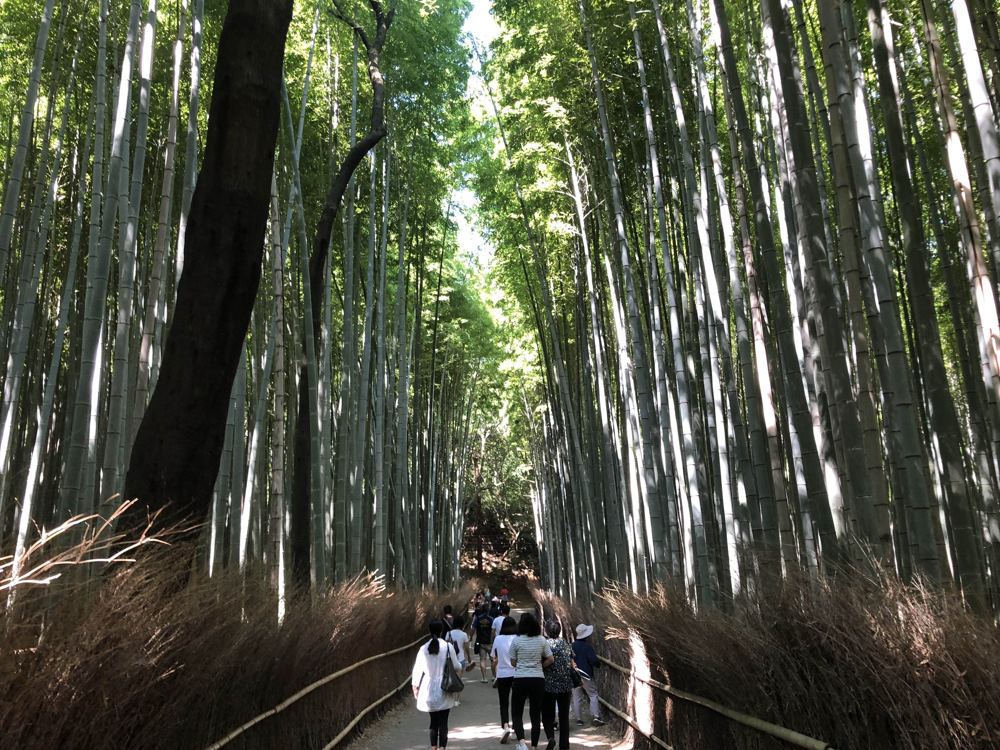
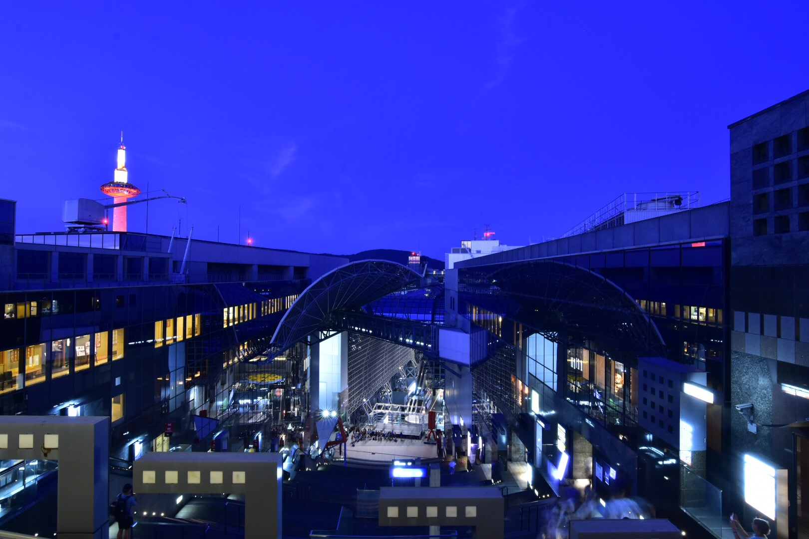
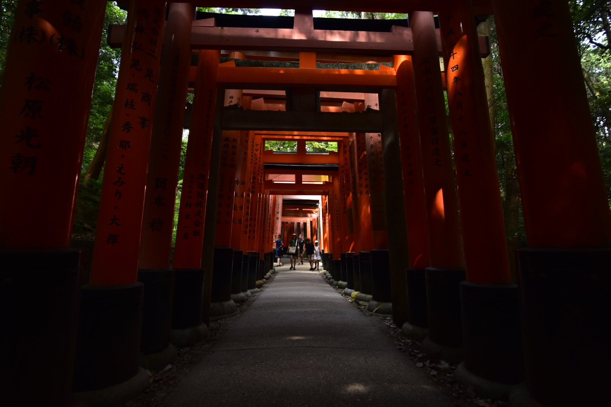
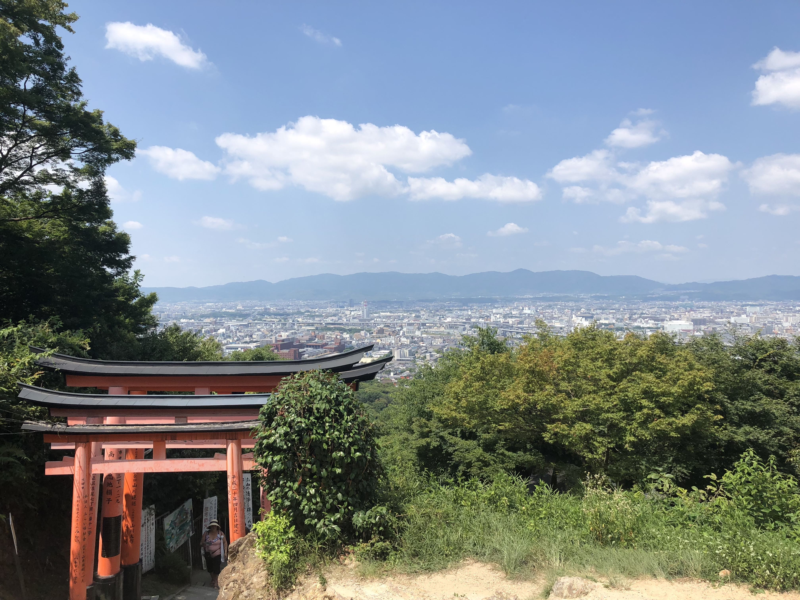
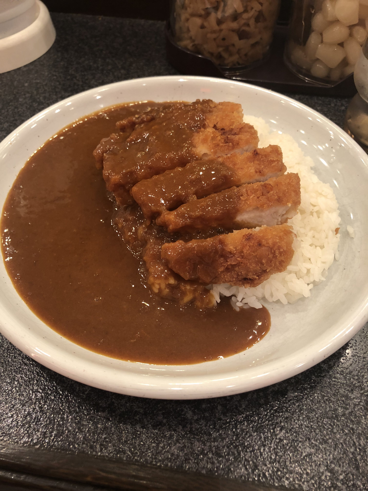
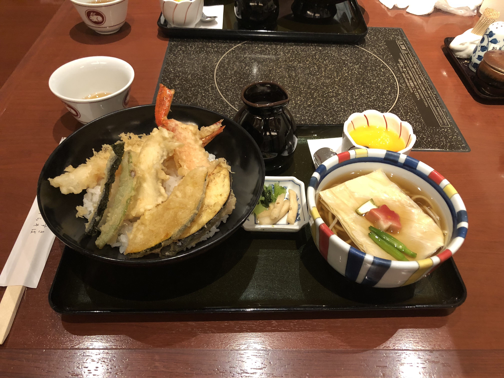

When I first arrived in Kyoto, I noticed how different it was
from other cities like Osaka and Tokyo. Many parts of Kyoto have an
ancient look to it, which at times made me feel like I was walking
through feudal Japan. Along with this, Kyoto's scenery is absolutely
breathtaking which are all popular tourist attractions.
|

Kyoto's famous bamboo forest, although we went quite early it was
absolutely packed with people eager to see the bamboo and beautiful
scenery
|

Kyoto Station, is simply a train station,
but it has amazing architecture and you can spend a whole day here with
all the restaurants and shopping malls attatched and inside the station.
|

Fushimi
Inari Shrine, is most easily recognized by it's red gates. These gates
trail up a mountain that many hike up to take pictures and enjoy the
beautiful view of Kyoto. With it's ancient origins, the Fushimi Inari
Shirine is absoultely serene.
|

The beautiful view of Kyoto from Inari Shrine mountain
|

Amazing food such as Japanese Curry and a gourmet Tempura Rice set can be purchased at the restaurants in Kyoto Station.
|
Back to the top!
|